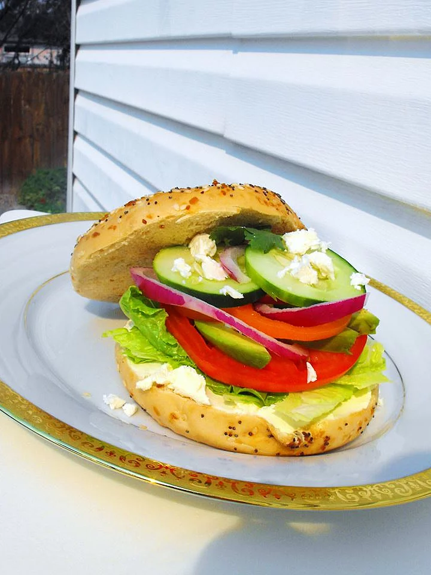

Fresh Veggie Bagel Sandwich

Description
This sandwich is so healthy and fresh! Crispy veggies and tangy mustard make this meal a real treat that you won't have to feel bad about eating. This sandwich is terrific with gourmet kettle cooked potato chips!
Ingredients
- 1 bagel, sliced in half
- 1 tbsp coarse-grain brown mustard
- 1 leaf romaine lettuce
- 2 (1/4 inch thick) rings green bell pepper
- 4 slices cucumber
- 2 slices tomato
- salt and pepper to taste
- 2 slices red onion
- 1/2 cup alfalfa sprouts
Directions
- Spread mustard onto cut sides of the bagel.
- Layer the lettuce, green pepper, cucumber, and tomato on one half.
- Season the tomato with salt and pepper.
- Top with onion and alfalfa sprouts, then cover with the other half of the bagel.
- Enjoy!
Back to the homepage